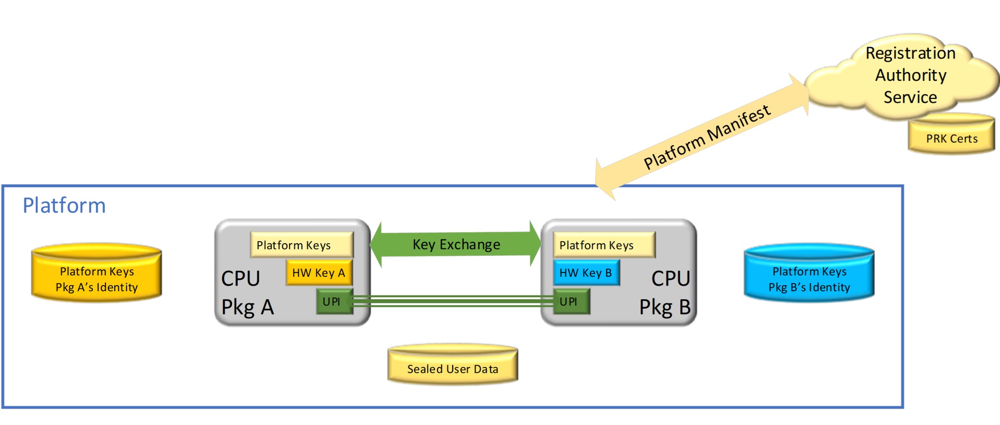

核对准确型号
SGX 支持与具体 SKU 有关。Intel 列出受支持的 Xeon 家族与型号；较早的消费级 CPU 情况不一。启用后可用 CPUID leaf 0x12 枚举 SGX 能力。
OS 管理地址空间和 EPC 资源。CPU 限制对 enclave 私有页的访问。Enclave 运行时提供受控入口，并处理调用外部代码时的边界。

“这个 CPU 家族支持 SGX”并不证明眼前的机器提供可用的 enclave 功能。
SGX 支持与具体 SKU 有关。Intel 列出受支持的 Xeon 家族与型号；较早的消费级 CPU 情况不一。启用后可用 CPUID leaf 0x12 枚举 SGX 能力。
即使 CPU 有能力，固件禁用 SGX 或未分配 EPC 时仍无法使用。BIOS 策略还可能影响 launch control 和 EPC 大小。
Linux SGX 驱动通过 /dev/sgx_enclave 构建 enclave。设备缺失可能是硬件不支持、固件关闭或内核缺少支持。
SGX1 提供基本 enclave 生命周期；SGX2 增加动态页面管理，软件应检查实际平台枚举的能力。
硬件资料：Intel 处理器列表与 Linux SGX 导读。
跟随一个页面从普通内存进入 EPC，并经过 CPU 元数据检查。

先按执行者和状态变化分组，再去记操作码。
| 操作 | 代表性 leaf | 内核或 VMM 的工作 |
|---|---|---|
| 构建与初始化 | ECREATE, EADD, EEXTEND, EINIT | 创建 SECS，填充 EPC 并度量初始镜像，随后校验 SIGSTRUCT，完成初始化。 |
| 换出与换入 | EBLOCK, ETRACK, EWB, ELDU, ELDB | 阻止对页面的新访问，跟踪旧地址转换，换出经认证加密的页面，再通过 ELDU 以未阻塞状态换入，或通过 ELDB 以阻塞状态换入。 |
| 回收 | EREMOVE | 移除 EPC 页面。拆除时先移除子页面，再移除 SECS。 |
| SGX2 | EAUG, EMODPR, EMODT | 增加待接受的页面、收紧 EPCM 权限或修改页类型。需要确认时，由 enclave 执行相应的接受操作。 |
| 调试与虚拟化 | EDBGRD, EDBGWR, ENCLV | 调试 leaf 用于访问调试 enclave。ENCLV 是独立的 CPL 0 指令，在 VMX 环境中执行 SGX 虚拟化 leaf，受硬件能力和 VMCS 控制。 |
| 执行位置 | 代表性 leaf | 操作含义 |
|---|---|---|
| Enclave 外 | EENTER, ERESUME | EENTER 从指定 TCS 的入口开始执行。ERESUME 从保存的 SSA 帧恢复被打断的执行。 |
| Enclave 内 | EEXIT, EREPORT, EGETKEY | 主动退出、生成绑定目标的本地 REPORT，或派生有权获得的密钥，例如报告密钥或封存密钥。 |
| SGX2 · Enclave 内 | EACCEPT, EACCEPTCOPY, EMODPE | 接受待处理页面或变更、复制内容并接受待处理页面，或扩展 EPCM 权限。OS 页表权限仍然生效。 |
| AEX-Notify · Enclave 内 | EDECCSSA | 在支持的平台上递减 TCS.CSSA，供 enclave 的 AEX 通知或异常处理流程使用。 |
指令通过 EAX 选择 leaf。每个 leaf 有自己的寄存器操作数和 enclave 上下文要求。可选 leaf 取决于 CPU 枚举出的能力。

AEX 与恢复是理解中断和不可信调度的关键。

| 路径 | 执行顺序 |
|---|---|
| ECALL | 宿主代理 → 非可信运行时（uRTS）→ 用 TCS 执行 EENTER → 可信运行时（tRTS）和桥接代码 → enclave 函数 → 复制允许输出的数据 → EEXIT。 |
| OCALL | Enclave 代理将请求封装到不可信内存 → EEXIT → 宿主回调执行 I/O 或系统调用 → 运行时通过 EENTER 再进入 → enclave 校验返回值。 |
| AEX / ERESUME | 中断或异常触发 CPU 将状态保存到 SSA 帧，向外部呈现合成寄存器状态。OS 处理事件后，正常恢复路径由 enclave 外的 AEP 跳板执行 ERESUME，还原先前状态。 |

结合生成的桥接代码读 EDL 的 [in]、[out]、[size=…]。核对长度，将不可信输入复制到 enclave 内再使用，并在每次 OCALL 后检查结果。 Intel SDK SampleEnclave 示例 ↗
Enclave 阻止页面被直接读取；宿主接口和侧信道行为仍需单独设计。
只保留秘密和需要处理秘密的代码。校验宿主调用返回的每个值。尽量缩小必须信任的运行时与序列化逻辑。
OS 和宿主进程可以调度、打断并提供输入。若应用未处理页面故障模式、缓存和时序，它们仍可能泄露信息。
本地 REPORT 用与目标 enclave 绑定的对称 MAC 认证。目标验证报告，并决定是否信任源 enclave。

TARGETINFO。Enclave A 将它和 64 字节的 REPORTDATA 传给 EREPORT。CPU 将 A 的身份与属性写入报告，并生成供 B 校验的 MAC。EGETKEY，按 REPORT 密钥类型及报告中的 KEYID 派生验证密钥。它先验证 MAC，再按策略评估 MRENCLAVE、MRSIGNER、属性和安全版本。REPORTDATA。Intel SDK 的 LocalAttestation 示例将本地报告与 Diffie–Hellman 结合来建立会话密钥。在 DCAP ECDSA 路径中，专用的 Quoting Enclave 将本地证据转换为签名 Quote，供外部验证者检查。

| 阶段 | 参与者与检查 |
|---|---|
| 挑战与本地报告 | 远程验证者发出新鲜挑战值。应用获取 QE 的目标信息（例如 sgx_qe_get_target_info），再让 enclave 用 EREPORT 为 QE 生成报告。按协议在 REPORTDATA 中绑定挑战值和所需的会话公钥等数据。 |
| 生成 Quote | QE 验证本地报告，再用证明密钥签署 Quote。Quote 携带应用报告体和认证数据，使验证者能把 QE 的证明密钥追溯到 PCK 证书。 |
| 验证与策略判断 | DCAP QVL 检查签名及验证材料，包括 PCK 证书链、CRL、TCB Info 和 QE Identity。依赖方结合验证结果及材料有效期，核对挑战值与公钥绑定，再按策略检查 enclave 身份、SVN 和 DEBUG 属性，决定是否下发应用秘密。 |
阅读 DCAP 示例时，依次跟踪 sgx_qe_get_target_info、应用 enclave 创建报告、sgx_qe_get_quote_size 和 sgx_qe_get_quote。验证侧的 sgx_qv_verify_quote 会返回 Quote 验证结果及验证材料的到期状态。示例演示库调用，挑战值、通道绑定和验收策略由应用协议实现。
Architectural Enclave（AE）是 SGX 平台软件使用的专用 enclave。DCAP 预配链将 QE 的证明密钥绑定到真实平台和对应的 TCB。
| 组件 | 职责 |
|---|---|
| QE · Quoting Enclave | 认证应用的本地 REPORT，并用 QE 自己的证明密钥签署 Quote。 |
| PCE · Provisioning Certification Enclave | 派生与平台及 TCB 对应的 PCK，用它为绑定证明公钥的 QE 报告签名。 |
| QvE · Quote Verification Enclave | 可选地在 enclave 内验证 Quote，并为可信调用方生成本地报告。宿主侧 QVL 也可以独立验证。 |
| AESM · Architectural Enclave Service Manager | 宿主守护进程，在进程外配置中协调架构 enclave 服务。进程内 DCAP 则由库加载 Quote 生成组件。 |
| 早期 AE | Launch Enclave（LE）为早期配置提供启动令牌。PvE 与 PSE 分别服务于 EPID 预配和早期平台服务。当前 DCAP 流程使用 ECDSA QE 与 PCE。 |
平台预配时，平台运营者从 Provisioning Certification Service（PCS）取得 Intel 签发的 PCK 证书与验证材料，通常经数据中心 PCCS 缓存。Quote Provider Library（QPL）提供获取这些材料的软件接口。PCK 证书包含公钥及认证元数据，PCK 私钥留在硬件支持的 PCE 路径中。
在单路平台上，证书请求使用加密的 PPID 等平台标识，以及 CPU SVN、PCE SVN 和 PCE ID。多路平台需先登记组装后的整机。PPID 标识平台，PCK 用于签署 QE 报告，各 CPU 封装另有用于签署注册证据的平台注册密钥（PRK）。
应用秘密预配发生在证明通过后。例如，客户端可以通过安全通道下发应用密钥，并用已验证证据中的公钥绑定确认通道确实通向目标 enclave。
多路系统在多个物理 CPU 封装之间建立共享平台密钥。完成整机注册后，平台才能取得相应的 PCK 证书。

SgxRegistrationServerRequest UEFI 变量提供待处理的平台清单。Multi-Package Registration Agent 可将请求转发给 Intel 注册服务。运营者也可收集清单并使用间接证书预配流程。
这些实例分别保护具体操作，包括数据库查询、密钥使用和通讯录查找。
| 实例 | Enclave 内做什么 | 部署背景 |
|---|---|---|
| Azure SQL Database · Always Encrypted | Enclave 处理列加密密钥，并对敏感值执行受支持的查询操作。客户端驱动使用 Azure Attestation 后才启用 SGX enclave 计算。 | 微软公布该 SGX enclave 配置将于 2027 年 10 月 31 日结束支持。 Microsoft Learn ↗ |
| Fortanix Data Security Manager | 在 SGX 部署中，服务在 enclave 内使用密钥并执行密码操作。其证明工具核对运行中的 DSM 身份和平台。 | 厂商文档给出了 SGX 部署的 DCAP 验证流程。 Fortanix ↗ |
| Signal · Private Contact Discovery | 公开设计在服务端 enclave 内匹配通讯录联系人，并用 Path ORAM 隐藏查找数据时的访问模式。 | Signal 工程团队于 2022 年 8 月公开的设计。 Signal Engineering ↗ |